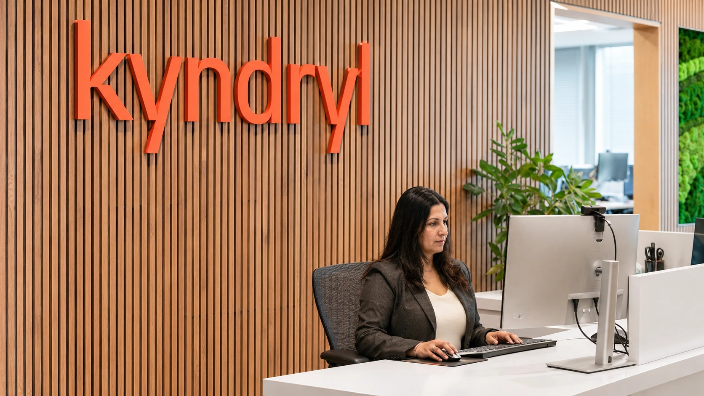

Kyndryl and AWS Target Legacy IT Costs With Agentic Modernization
The IT services company is combining its modernization workflows with AWS Transform. The commercial test is lower migration and maintenance costs after validation, not just faster code changes.

Kyndryl announced an integrated modernization offering with Amazon Web Services on November 5, combining its software-driven services and engineering expertise with AWS Transform. The IT services company is targeting the work required to assess, plan and update established applications, infrastructure and core systems.
The financial opportunity lies in changing the cost of maintaining old technology and moving it onto a new operating foundation. That is a broader task than generating replacement code. A modernization program must preserve the business functions of the existing system, validate the result and manage the period when old and new environments may overlap.
Kyndryl’s announcement describes the intended benefits of the combined offering. It does not disclose a contract value, a standard price, a named customer’s realized savings or an independently measured return on investment. Those omissions leave the commercial outcome to be assessed through deployments rather than inferred from the partnership announcement.
Automation changes the delivery model
Kyndryl describes its approach as services-as-software: using prebuilt digital workflows and automation to deliver work traditionally dependent on specialist teams. Its release identifies the Kyndryl Agentic Framework and Kyndryl Bridge as parts of that delivery approach. The company was already a launch partner for AWS Transform; the announcement extends an existing relationship.
For a services provider, repeatable software workflows can change how delivery capacity grows. Reusing a process across engagements could reduce the amount of work recreated for each customer. Whether that improves margins depends on implementation effort, support requirements and what customers pay. Automation can also change the skills needed without removing the need for engineering accountability.
For the buyer, a lower bill for one part of the migration does not establish a lower total cost. A company may spend less on code conversion but more on testing, data reconciliation or changes to connected applications. The appropriate comparison is the cost of a functioning replacement, including the transition, against the cost and risk of retaining the existing environment.
AWS supplies tools; the customer still has a system to validate
AWS describes Transform as supporting infrastructure migration and modernization of applications including Windows and mainframe workloads, alongside custom code transformations. Its product documentation also describes human review and traceability between source and target. These are vendor descriptions of capabilities, rather than evidence that every legacy estate can be converted with the same effort.
The technical issue is that an old application contains more than its visible code. Business rules, interfaces, data formats and operational dependencies can determine whether it continues to work after a change. A program that compiles successfully can still produce an incorrect business outcome or fail to connect with another service.
Consider an illustrative payment-processing application. Rewriting its logic would be only one deliverable. The buyer would also need to establish that transaction totals reconcile, access rules remain correct and failure recovery works. These are examples of acceptance criteria, not a description of a Kyndryl customer or a measured deployment result.
Our report on Revolut’s self-hosted coding AI examines a related economic distinction: cheaper model output does not, by itself, prove cheaper completed engineering work. Modernization adds the further cost of moving an operating business onto that output.
A useful business case separates one-time and recurring costs
A migration budget usually needs to distinguish the initial project from the system that remains afterward. Discovery, conversion and parallel testing are transition costs. Hosting, software licenses, monitoring and support continue after cutover. Moving an expense from one category to another can change its timing without reducing the lifetime amount.
The same distinction applies to retiring old infrastructure. Savings depend on whether the previous licenses, hardware commitments or support arrangements can actually end. Keeping both environments running indefinitely can preserve costs that a project proposal assumed would disappear. A credible business case identifies the specific retirement milestone that releases the saving.
Our guide to AI unit economics explains why accepted outcomes provide a better denominator than raw activity. For modernization, useful measures include applications successfully moved, defects requiring correction, operating cost after transition and the human effort still needed. Counting code changes alone leaves much of the financial question unanswered.
Governance is part of execution
An automated workflow also needs an owner for the decisions it makes. Access to production data, permission to modify a service and approval to deploy a change create different levels of authority. Those boundaries matter because faster execution can accelerate an error as well as a successful update.
The OCC’s recent discussion of AI agents in banking provides context for evaluating capabilities and consequences, without making the Kyndryl offering a banking-regulatory approval. A technology customer still needs to define what the workflow can do, what requires review and how an incident would be investigated.
Kyndryl and AWS are presenting modernization as a continuing operating capability rather than a single project. The financial test is whether that approach reduces the cost of keeping systems useful after implementation, while preserving reliability. Evidence from completed migrations and ongoing operations will be more informative than the speed of generating the next batch of changes.